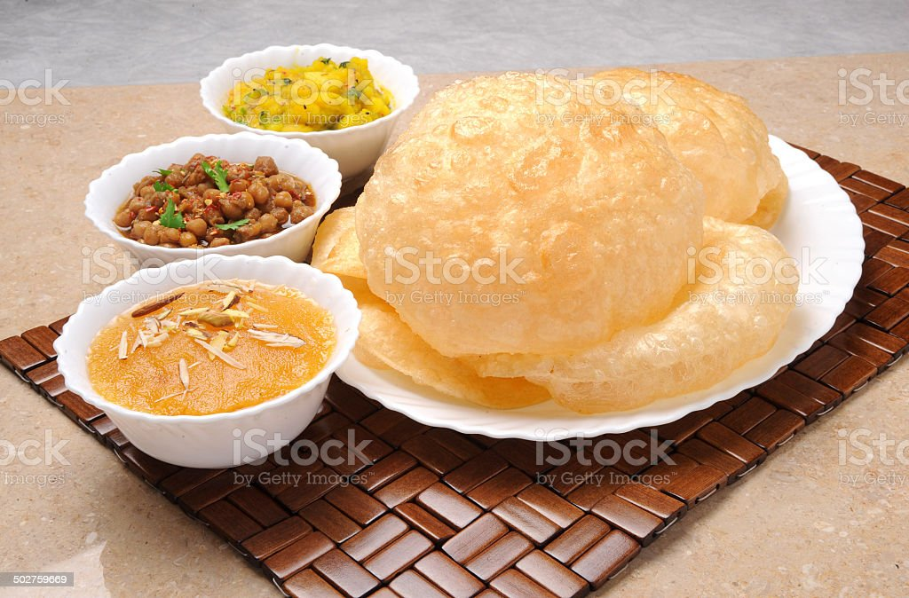
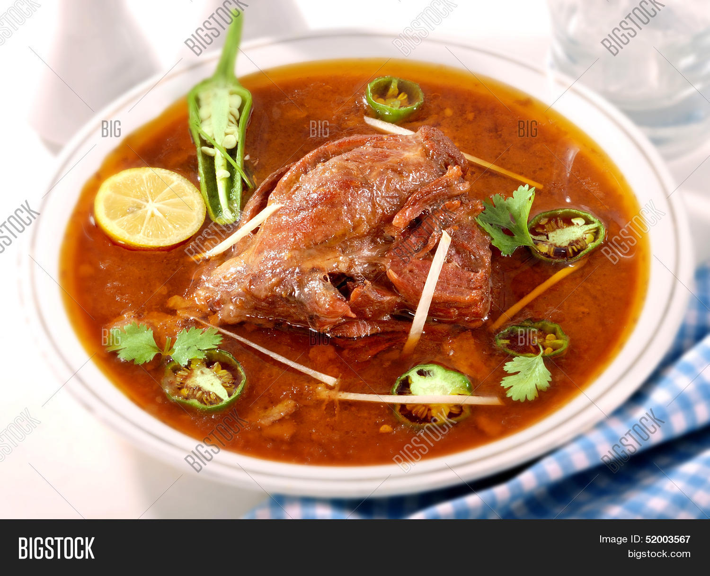
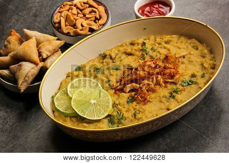
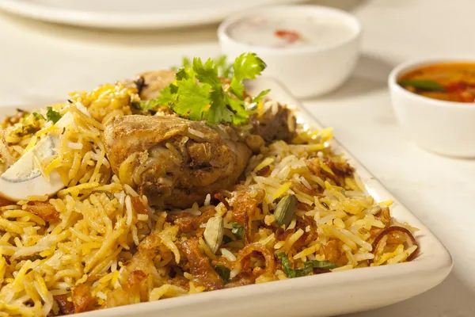

Lahore is a center of lighting, light bulbs, colorful people, and mostly food.
This location hosts restaurants and locations that serve not only conventional meals but also
continental, Chinese, and Thai cuisine.
Best food is part of the city Lahore culture and origins.
With its continuing ethnic and traditional foods,
Lahore has retained its reputation.
Everybody is a fan of Lahori food. Lahore has everything from mouthwatering desi to the popular nihari.
Lahore is renowned for its numerous fireworks worldwide, i.e. it’s going to set fire to your mouth.
Famous Lahori Dishes:
Halwa Puri

Halwa Puri is a traditional desi breakfast that Lahoris love with all their hearts. The
authentic taste
of Halwa Puri will always take you back to old Lahore: with the best taste in the city!Next up
is our
halwa – halwa is a sweet breakfast dish enjoyed fully by everyone. The pairing of halwa puri is
just
wonderful for everyone to start off a lazy Sunday with!
Nihari

Nihari is a traditional dish that was loved by the Mughal Emperors, a meal they would enjoy as a
morning
meal after their morning prayers. It includes slow-cooked meat and stew, flavored with spices
that have
an effect of a burst of flavors in your mouth. The meat of Nihari is so tender, it literally
melts in
your mouth the moment you ingest it, so trust us when we say you have to try it.
Haleem

Thick, creamy, meatiness garnished with fried onions, ginger, juicy lemons, coriander, and
whatnot. You
will find best haleem at our Place.
Biryani

Biryani is a dish loved by all! Flavorful rice with spicy chicken, it’s the epitome of spices
and
flavors that you’ll enjoy. Biryani is not too heavy on the pocket either, and just the aroma of
it will
make your mouth water. You have several different options you can choose from – for example,
Mughlai
Biryani, Sindhi Biryani, etc. Choose one that suits your tastes best, and enjoy!